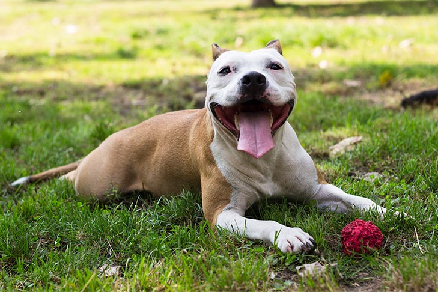

Checklist for New Pet Ownners

Congratualions on findinig a Canine Friend that matches your Personalitly the best!
Now that you know the dog bread that will cater to all your needs,
the next step is to get prepared to bring your new frined home.
Here at FurEver Dog, we complied a checklist that can assit in making your transition
in bringing home your new caninie friend as smooth as possible.
Questions to Consider
- If adopting or buying a yound cannine friend, do you have the patiance/time to work with adolelscent behavior such as dog chewing, and house trianing?
- Does anyone in your household suffer from dog allergies or have health issues that may be affected by dogs?
- Do you currently own other pets, and if you do how will they react to a new friend?
- Do you have a plan to take care of your pet when your away for vacation/work travel?
- Do you have any HOA restrictions or limiitatins of specifc dog breads or sizes?
- How will your socila/work life affect your ablity to care for your pet?
- Do you have enough space, inside and outside for your new pet?
Pet cost
Cost can vary depending if your adopting, purchasing from a breader, or a pet store.
More likley then not you will be charged some sort of fee to bring your pet home.
Depending on your circumestance you might be required to get your dog spayed or neutred befroe bringing your frined home.
Regardless on your circumstances, every dog requires specifc cost including:
- licensing fees based on local state/county regualtuions $22-$55
- routine veterinary care/pet insurance
- Food ranging from $20-$60 a month
- collars,leshes,identification tags
- basic grooming supplies
- carrier crate
Necessary items for dogs
- food and water bowls
- collars
- Dog leshes
- Id Tag with your contact information
- Carrier crate
- dog bed
- Dog shampoo and conditioner
- nail clippers
- canine toothbrush and toothpaste
- dog brush or comb depening on lenghth of dogs coat
- First aid supplies
- sponge adn scrub brush
- Varity of toys(avoid choking hazzard)
- Dog treats(avoid rawhide)